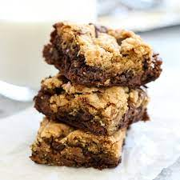

Part brownie, part chocolate chip cookie: BROOKIES are one of my favorite recipes! They’re rich and a combination of two of my favorite desserts. Don’t worry: it’s easy to make homemade Brookies. A brookie is a dessert mashup of epic proportions: it’s part brownie and part cookie.
Home 